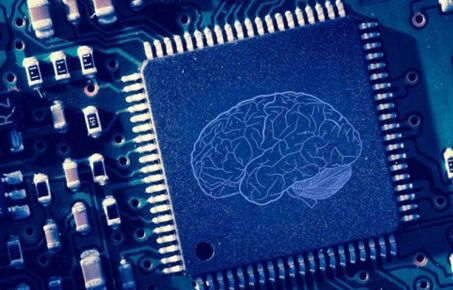
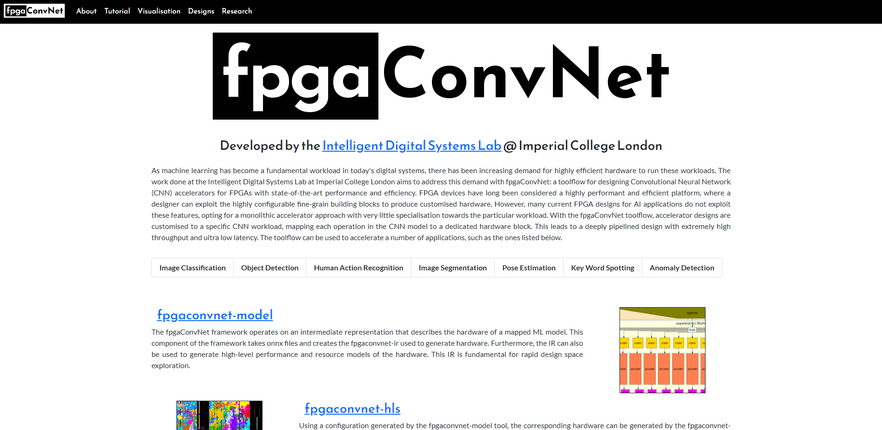
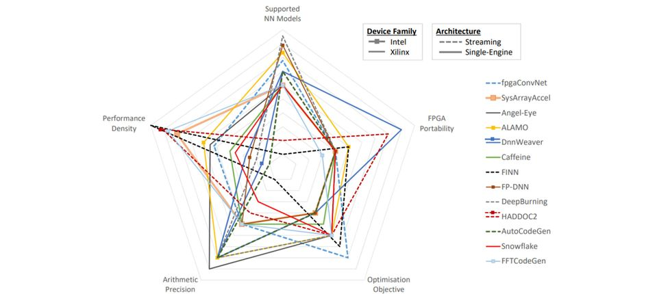

We map applications onto reconfigurable devices and other processors, build toolflows that automatically map algorithms to hardware, and design architectures for specific problem classes.

Machine Learning
We design neural networks and training methods that are efficient to deploy, including early-exit cascades with uncertainty estimation (ICCV 2023).

Computer Vision
We develop accelerators and toolflows for CNNs and 3D CNNs for video, and real-time detection such as YOLOv8 on FPGAs.

Robotics & UAVs
We work on drones with embedded visual intelligence, in collaboration with the KIOS Research Center. Our drone research was shown at the Imperial Festival.
fpgaConvNet
An automated toolflow that maps CNN models onto FPGAs, with an accompanying survey and CNN-to-FPGA benchmark suite.
Code on GitHub

Toolflow survey
Our survey of toolflows for mapping CNNs on FPGAs (ACM Computing Surveys) compares them along supported models, portability, precision and more.
Explore our papers
Browse the full list of publications by research area.
Publications